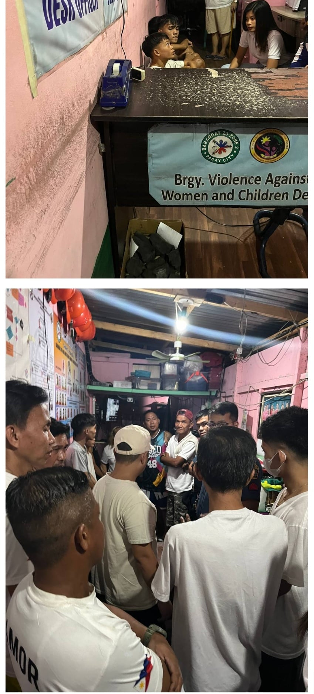
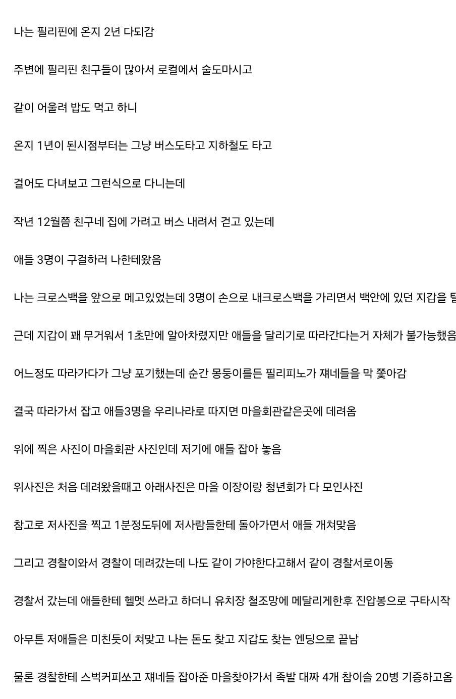

굿굿
애들이 지역사회를 몰라도 한참 몰랐네 ㅋㅋ
옛날에 갔을 때 공항에서 내리자마자 어린애 하나가 칭-챙-총 거리면서 나 따라오다가 눈 마주치니까 실실쪼갬. 아는 영어 다 써가면서 뭐라고 하니까 자경단 아조시 오고 뭔 일이냐길래 대강 설명했더니 애 뒤통수 존나 쎄게 후리니까 애가 소리 지르면서 도망감;
철저한 보상을 해주니 너를 믿고 다음에도 지켜줄 수 있겠는걸?
필리핀에서 소주 개비쌀텐데 ㅋㅋㅋㅋㅋ
와 많이 올랐네 코로나 무렵엔 400페소였는데.